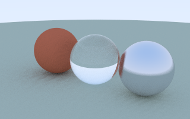

Prism
Watch glass, metal and matte spheres emerge as a path tracer calculates the light. Inspect one ray’s journey and see how extra samples buy clarity.

0 SAMPLES / PIXEL0.0 sPreparing plate
01 / ONE LIGHT PATH
Click the plate, or focus it and use arrow keys then Enter. This is one new stochastic sample, projected onto the horizontal x–z plane.
02 / NOISE AGAINST SAMPLES
RMS radiance error on a separate 40 × 25 reference plate of this scene. Both axes are logarithmic.
━ measured RMS┄ ideal −½ slope
Measuring…
Each bounce samples a new direction. Matte scatters, metal reflects, glass reflects or refracts; paths that reach the bounce limit contribute black. Rendering stops at 256 samples.